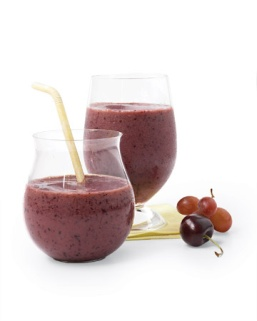

ခ်ယ္ ရီဘယ္ ရီ လက္ ဘက္ စိမ္း ေဖ်ာ္ရည္

ပရိုတင္း ၾကြယ္ ဝတဲ့ တိုဖူးကို အ ေအးခံထားတဲ့ ဘယ္ ရီသီး၊ ခ်ယ္ ရီသီး၊ စပ်စ္ သီး တို႔ႏွင့္ ေရာကာ ျပဳလုပ္ ထားတာ ျဖစ္ ပါတယ္။
ပါဝင္ပစည္းမ်ား
• ေရ
• လက္ ဘက္ ရည္ ထုပ္ ၂ထုပ္
• တိုဖူး
• ေအးခဲထား ေသာ ခ်ယ္ ရီသီး
• ေအးခဲထား ေသာ ဘယ္ ရီသီး
• ေအးခဲထား ေသာ စပ်စ္ သီး
ျပဳလုပ္ နည္း အဆင့္ ဆင့္
၁။ ေရဆူလာျပီဆိုရင္ မီးဖို ေပၚကခ်ကာ လက္ ဘက္ ရည္ ထုပ္ ၂ထုပ္ ကို စိမ္ ပါ။ အဖံုးမအုပ္ ဘဲ ၈မိနစ္ ခန္႔ ထားပါ။ လက္ ဘက္ ရည္ ထုပ္ မ်ားကို ဖယ္ ျပီး ပူ ေန ေသာ လက္ ဘက္ ရည္ ကို အ ေအးခံပါ။
၂။ လက္ ဘက္ ရည္၊ တိုဖူးႏွင့္ အသီးတို႔ကို ေမႊစက္ ထဲထည့္ ေမႊပါ။ ခ်ယ္ ရီဘယ္ ရီ လက္ ဘက္ စိမ္း ေဖ်ာ္ ရည္ ေအး ေအး ေလးရပါျပီ။